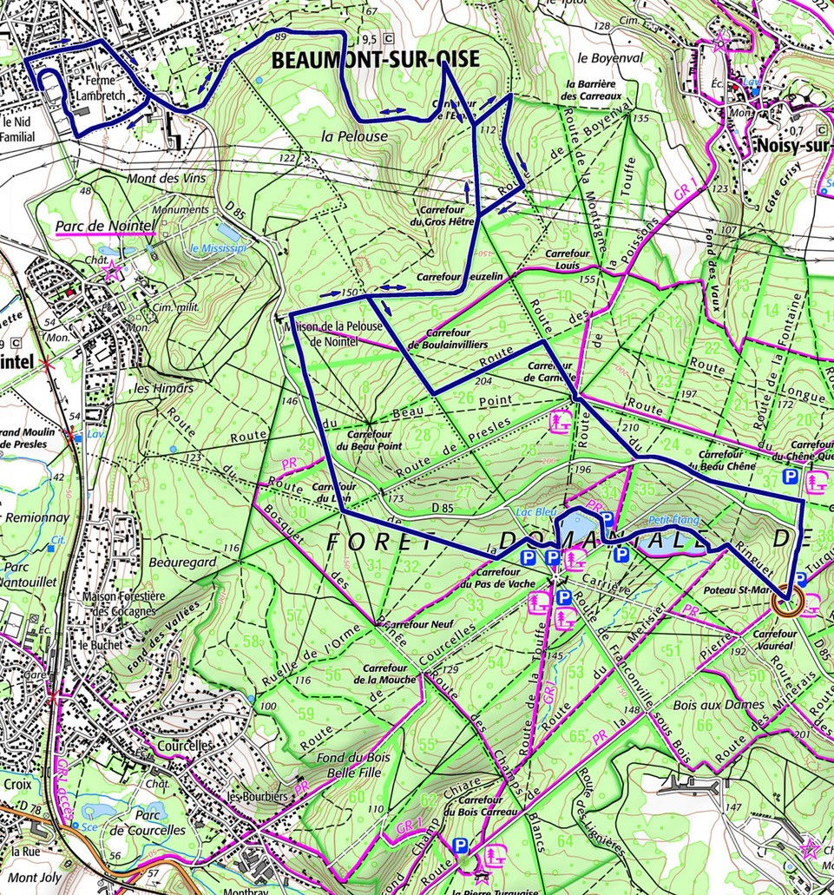
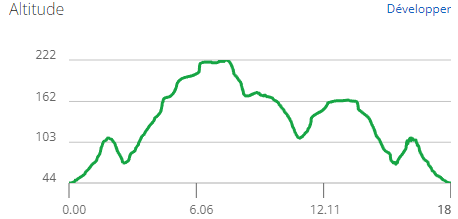
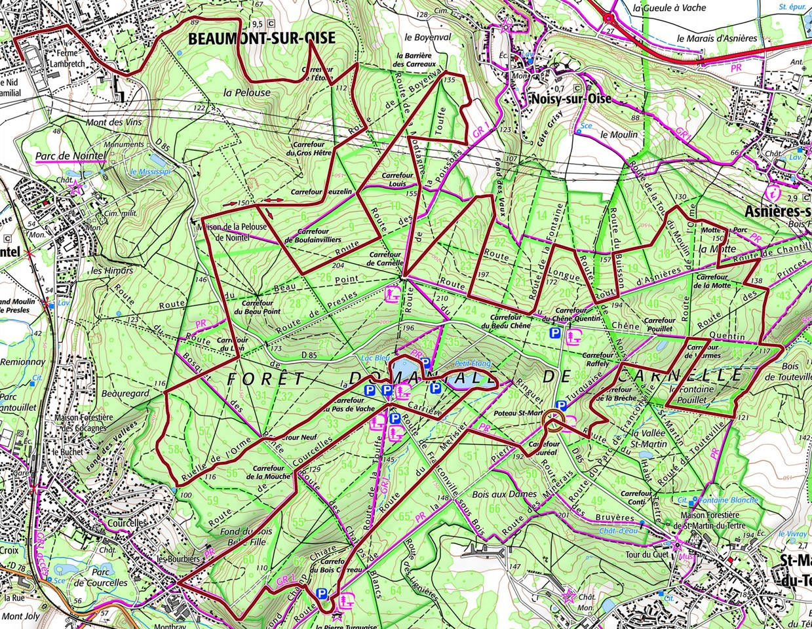
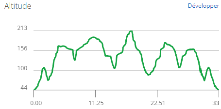

Les parcours
Le Petit : 15kms / 290D+
Ce parcours est destiné à ceux qui souhaitent se challenger tout en découvrant une partie de la forêt de Carnelle
Tracé
Typographie
Informations diverses
Horaires - Départ : 9h00
Barrières - 10kms : 10h45
Informations importantes
Le Grand : 30kms / 500D+
Ce parcours est destiné aux gourmands d'efforts qui souhaitent se mesurer aux difficultés présentent en forêt de Carnelle
Tracé
Typographie
Informations diverses
Horaires - Départ : 8h30
Barrières - 10kms : 10h00 - 20kms : 11h30
Informations importantes